Lecture 20 Workbook
This workbook holds the notes and the questions for Lecture 20. Each section starts with notes that explain everything on the slides, and a little more. Answer the questions as we discuss the slides. For a multiple-choice question, circle one letter. Section 10 has two complete programs to write after class. By the end, you should be able to:
- explain why a class can extend only one class;
- write an interface, and a class that implements one or more interfaces;
- use an interface as the type of variables, parameters and lists;
- write a default method, and say why interfaces have them;
- declare a list with the
Listinterface as its type; - write a lambda for a functional interface;
- choose between an abstract class and an interface; and
- write complete programs in which unrelated classes share an interface.
1. One superclass
Shapes and labels
Our example is a drawing program. It shows squares and text labels on a screen. Shape is the abstract class from Lecture 19, with a name and an abstract area(). Square extends it. Label holds a line of text. Both Square and Label have a method draw() that prints them.
We want one list that holds squares and labels together, and one loop that calls draw() on each item. For that, the list needs one type that both classes belong to, and that type must have draw().
Label as a Shape
One idea is to make Label extend Shape, and give Shape a draw() method. But a label is not a kind of shape. It has no area, yet Label would have to write area() because it is abstract in Shape. It could only return a made-up 0, which is a wrong answer that the compiler never reports.
Two superclasses
Suppose Label already extends a class Text, which holds its text. Then it cannot also extend Shape:
public class Label extends Text, Shape
{
}error: '{' expected
After extends, Java allows exactly one class name. The compiler reads Text, expects the class body to start with {, and stops at the comma.
Multiple inheritance
Multiple inheritance means a class inheriting directly from more than one supertype. Java forbids it for classes. The reason is a clash: two superclasses could each have a draw() method with a different body, or a field with the same name. The subclass would not know which one it gets.
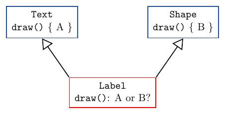
Java does allow a class to have more than one interface. Interfaces have no fields and normally no method bodies, so there is nothing to clash. The rest of this workbook is about them.
Practice
1.1 public class Label extends Text, Shape gives error: '{' expected. Why?
TextandShapehave different fields.Shapeis abstract.- After
extends, Java allows only one class name. Labelmust be abstract.
1.2 Label extends Shape and writes an area() that returns 0. What is wrong with this design?
- It does not compile.
- A label is not a kind of shape, and its
area()gives a made-up answer with no error. Labelcannot also have adraw()method.Shape's constructor cannot be called fromLabel.
1.3 Which of these is multiple inheritance?
- A class with many subclasses.
- A chain of three classes, each extending the one above it.
- A class with several constructors.
- A class inheriting directly from more than one supertype.
1.4 Java forbids a class with two superclasses. What problem could two superclasses cause?
2. Interfaces
Interface syntax
An interface lists method headers that a class promises to provide. It is a type, like a class, but it has no fields, no constructors and no objects of its own. Write interface where a class has class:
public interface Drawable
{
void draw();
}void draw(); is a header with no body, ending with a semicolon, like an abstract method in Lecture 19. Every method header in an interface is automatically public and abstract. Writing public abstract void draw(); means the same thing, but most programmers leave both words out.
In UML, an interface has «interface» above its name. A class that implements it has a dashed arrow with an open triangle pointing to the interface:
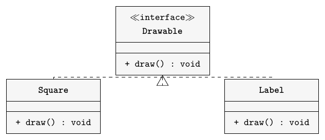
Interface rules
- No constructor.
public Drawable() { }inside the interface giveserror: <identifier> expected. With no fields there is nothing to set up. - No instance fields. Any field in an interface is a constant, so it must have a value.
int count;giveserror: = expected.int MAX_ITEMS = 20;is allowed, and it is automaticallypublic static final. - No objects.
Drawable d = new Drawable();giveserror: Drawable is abstract; cannot be instantiated. - A class can have one superclass and any number of interfaces.
Practice
2.1 Write an interface Playable with two methods: play, which takes no parameters and returns nothing, and length, which returns an int.
Write Playable in the box. The box includes a Song class that implements it, and plays a song.
2.2 Each line below is written inside public interface Drawable. Write yes or no: does it compile?
Line in Drawable | Compiles? |
|---|---|
void draw(); | |
public abstract void draw(); | |
int MAX_ITEMS = 20; | |
private int count; | |
public Drawable() { } | |
void reset() { } |
2.3 What is int MAX_ITEMS = 20; inside an interface?
- A constant: it is
public,staticandfinalwithout saying so. - An instance field; each object gets its own copy.
- A compile error, because interfaces have no fields.
- A private field that only the interface can use.
2.4 What happens with Drawable d = new Drawable();?
drefers to an emptyDrawableobject.- It compiles, but fails when the program runs.
- A compile error:
Drawable is abstract; cannot be instantiated. - It compiles if
Drawablehas only one method.
3. Implements
implements syntax
A class promises to provide an interface's methods with the word implements. Label has no superclass of its own:
public class Label implements Drawable
{
private String text;
public Label(String text)
{
this.text = text;
}
public void draw()
{
System.out.println("Label: " + text);
}
}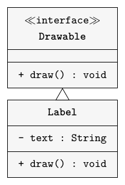
extends and implements together
Square extends Shape and implements Drawable. extends comes first, then implements. Square writes area() for Shape and draw() for Drawable:
public class Square extends Shape implements Drawable
{
private double side;
public Square(String name, double side)
{
super(name);
this.side = side;
}
public double area()
{
return side * side;
}
public void draw()
{
System.out.println("Square " + getName() + ", area " + area());
}
}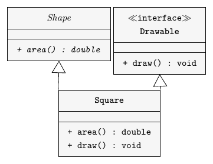
Two mistakes with implements
- Leaving out the promised method. If
Label implements Drawablehas nodraw(), the compiler saysLabel is not abstract and does not override abstract method draw() in Drawable. - Forgetting
public. Interface methods are alwayspublic, so the class's method must bepublictoo. IfLabelwritesvoid draw(), the compiler saysdraw() in Label cannot implement draw() in Drawableattempting to assign weaker access privileges; was public.
An abstract class implementing an interface
An abstract class can implement an interface without writing its methods:
public abstract class Shape implements Drawabledraw() stays abstract in Shape, so every concrete subclass, such as Square, must write it. Every Shape is now a Drawable, and so is every Square, without writing implements again:
Drawable d = new Square("tile", 5);
d.draw();Square tile, area 25.0
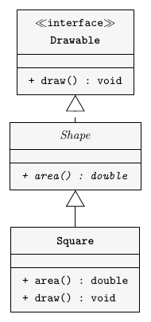
Practice
3.1 Write a class Song that implements Playable from question 2.1. It has private fields title (a String) and seconds (an int), a constructor Song(String title, int seconds), a method play() that prints Playing followed by the title, such as Playing Rain, and a method length() that returns the seconds.
Write Song in the box. The box includes Playable, plays the song Rain and prints its length.
3.2 public class Label implements Drawable has no draw() method. What does the compiler say?
- Nothing;
Labelinherits an emptydraw(). Label is not abstract and does not override abstract method draw() in Drawable.Drawable is abstract; cannot be instantiated.'{' expected.
3.3 Label writes void draw() instead of public void draw(). Why is this a compile error?
- The interface's method is public, and a class cannot give the method weaker access.
- Every method in every class must be public.
draw()must bestatic.- The method needs
@Overrideabove it.
3.4 Shape is an abstract class and Drawable is an interface. Which header compiles?
public class Square implements Drawable extends Shapepublic class Square extends Shape, Drawablepublic class Square implements Shape, Drawablepublic class Square extends Shape implements Drawable
3.5 public abstract class Shape implements Drawable does not write draw(). What is true?
- It is a compile error:
Shapemust writedraw(). draw()gets an empty body inShape.- Subclasses of
Shapeare notDrawable. - It compiles.
draw()stays abstract, and every concrete subclass must write it.
3.6 Write a class Circle that extends Shape and implements Drawable. Here Shape has a name, getName() and an abstract area(). Circle has a field radius, a constructor Circle(String name, double radius), an area() that returns 3.14 * radius * radius, and a draw() that prints in the same form as Square, such as Circle plate, area 314.0.
Write Circle in the box. The box includes Shape and Drawable, and draws a plate with radius 10.
4. Interface types
Drawable as a type
An interface is a type, so it can be the type of a variable, a parameter or a list. An ArrayList<Drawable> holds squares and labels together. In this section Shape does not implement Drawable; Square implements it directly, as in Section 3. Squares and labels share no superclass except Object. They share only the promise to have draw().
ArrayList<Drawable> screen = new ArrayList<>();
screen.add(new Square("tile", 5));
screen.add(new Label("Exit"));
screen.add(new Square("mat", 2));
for(Drawable d : screen) {
d.draw();
}Square tile, area 25.0 Label: Exit Square mat, area 4.0
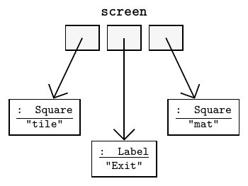
d.draw() compiles because every Drawable has draw(). The body that runs is the object's own: Square's for the squares and Label's for the label. There are no instanceof tests and no casts.
Several interfaces
A second interface lets things be resized:
public interface Resizable
{
void scale(double factor);
}A class lists its interfaces after implements, separated by commas. Square must now write draw() and scale(...), which multiplies its side by the factor:
public class Square extends Shape implements Drawable, Resizable
public void scale(double factor)
{
side = side * factor;
}One object, several types
A Square object is a Square, a Shape, a Drawable and a Resizable. Variables of all four types can refer to the same object. The type of the variable decides which methods the compiler lets you call through it:
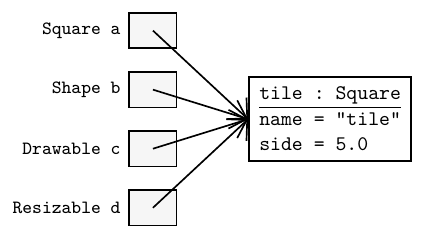
| Variable type | Can call |
|---|---|
Square | everything |
Shape | getName(), area() |
Drawable | draw() |
Resizable | scale(...) |
A parameter of interface type
A method should ask for the smallest type it needs. growAll only calls scale(...), so its parameter is a list of Resizable:
public static void growAll(ArrayList<Resizable> items, double factor)
{
for(Resizable r : items) {
r.scale(factor);
}
}With tile (side 5) and mat (side 2) in items, growAll(items, 2) doubles each side, and drawing them prints:
Square tile, area 100.0 Square mat, area 16.0
A Label is not Resizable, so it cannot go in items. Any future class that implements Resizable can, with no change to growAll.
Practice
4.1 Square implements Drawable and Resizable. Label implements only Drawable. Write yes or no: does each line compile?
| Line | Compiles? |
|---|---|
Drawable a = new Square("mat", 2); | |
Shape b = new Label("Exit"); | |
Resizable c = new Square("tile", 5); | |
Square d = new Label("Exit"); |
4.2 Here Shape does not implement Drawable. After the two lines below, write yes or no: does each call compile?
Drawable d = new Square("tile", 5);
Shape s = new Square("mat", 2);| Call | Compiles? |
|---|---|
d.draw(); | |
d.area(); | |
s.area(); | |
s.draw(); |
4.3 In for(Drawable d : screen) { d.draw(); }, why does d.draw() compile?
- Every object in Java has a
draw()method. - The compiler checks each object in the list.
dhas typeDrawable, and everyDrawablehasdraw().SquareandLabelextend the same superclass.
4.4 screen holds a Label. When the loop reaches it, which draw() runs?
- The
draw()inLabel. - The
draw()inDrawable. - The
draw()inSquare, the class of the first object. - None;
draw()has no body.
4.5 items is an ArrayList<Resizable>. What happens with items.add(new Label("Exit"));?
- It compiles, and
growAllskips the label. - It compiles, but fails when
growAllcallsscale. - It compiles, because
LabelimplementsDrawable. - A compile error: a
Labelcannot be converted toResizable.
4.6 Square implements Drawable and Resizable. What does this code print?
Square rug = new Square("rug", 3);
ArrayList<Drawable> screen = new ArrayList<>();
screen.add(rug);
screen.add(new Label("Open"));
rug.scale(2);
for(Drawable d : screen) {
d.draw();
}| Line | Printed |
|---|---|
| 1 | |
| 2 |
4.7 Write a static method drawAll(ArrayList<Drawable> items) that draws each item, then prints the number of items followed by items drawn, such as 2 items drawn.
Write drawAll in the box. The box includes Drawable, Square and Label, and draws a label and a square.
5. Default methods
Default method syntax
A default method is a method in an interface with the word default and a body. Every class that implements the interface gets it, as if it were inherited. Here Drawable gets a method that draws the item inside a frame:
public interface Drawable
{
void draw();
default void drawFramed()
{
System.out.println("+--------------+");
draw();
System.out.println("+--------------+");
}
}Drawable d = new Label("Exit");
d.drawFramed();+--------------+ Label: Exit +--------------+
An interface has no fields, so a default method's body can only use its parameters and call other methods, such as draw(). The draw() that runs is the object's own, here Label's.
Why default methods exist
Suppose Drawable is used by many classes, and a new method drawFramed() is added to it.
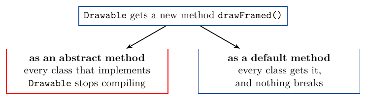
With the abstract version, Label fails with Label is not abstract and does not override abstract method drawFramed() in Drawable. Default methods were added to Java so that interfaces in the Java library could grow without breaking code that already implements them.
Overriding a default method
A class can still write its own version of a default method, with the same header. Then objects of that class run their own version instead of the default.
Two defaults with the same name
Suppose Drawable has default String info() returning "can be drawn", and Resizable has one returning "can be resized". If Square implements both and does not write info(), the compiler cannot choose:
error: types Drawable and Resizable are incompatible; class Square inherits unrelated defaults for info() from types Drawable and Resizable
Square must write its own info(). Inside it, Drawable.super.info() calls the version in Drawable:
public String info()
{
return Drawable.super.info() + " and " + Resizable.super.info();
}Then tile.info() prints:
can be drawn and can be resized
Practice
5.1 What is a default method?
- A method in an interface with the word
defaultand a body, which every implementing class gets. - The method a class runs when no other method fits.
- An abstract method that every implementing class must write.
- A constructor in an interface.
5.2 Drawable has the default method drawFramed() above. What does this code print?
Drawable d = new Square("tile", 5);
d.drawFramed();| Line | Printed |
|---|---|
| 1 | |
| 2 | |
| 3 |
5.3 Why add drawFramed() to Drawable as a default method rather than an abstract one?
- Default methods run faster.
- An abstract method cannot call
draw(). - Classes that already implement
Drawablekeep compiling, and get the new method. - Only default methods can be
public.
5.4 Drawable has only void draw();. Add a default method drawTwice() that calls draw() twice.
Add drawTwice() to Drawable in the box. The box includes Label, and calls drawTwice() on the label Exit.
5.5 In Square's info(), what does Drawable.super.info() do?
- It calls
info()inSquare's superclass,Shape. - It calls the default
info()written inDrawable. - It calls
info()in every interfaceSquareimplements. - It creates a
Drawableobject and calls itsinfo().
6. Library
The List interface
The Java library uses interfaces too. List is an interface in java.util. It has the methods we know from ArrayList: add, get, remove, size and more. ArrayList and LinkedList are two classes that implement it, built in different ways. The interface is the specification: what you can do with a list. Each class is one way to do it. The name says it: an ArrayList is a List built on an array.
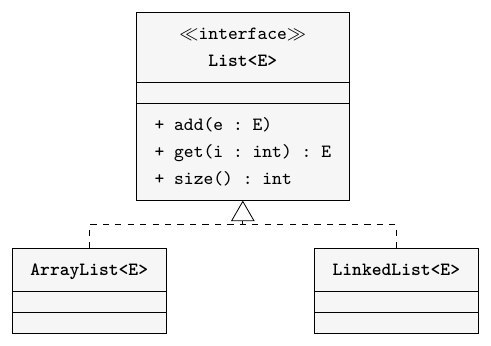
has add, get and size. ArrayListChanging one line
Declare the variable with the interface type. Only the new part names a class:
List<String> names = new ArrayList<>();
names.add("Ana");
names.add("Ben");
names.add(0, "Cara");
System.out.println(names);[Cara, Ana, Ben]
The program needs import java.util.List; as well as the import of the class. To switch to a LinkedList, change new ArrayList<>() to new LinkedList<>() and its import. The rest of the code stays the same, and it prints the same list. A method with a List<String> parameter accepts both kinds of list.
Practice
6.1 Which is true of List, ArrayList and LinkedList?
Listis a class, and the other two extend it.- All three are interfaces.
ArrayListis an interface, andListimplements it.Listis an interface, and the other two are classes that implement it.
6.2 Why write List<String> names = new ArrayList<>(); rather than ArrayList<String> names = new ArrayList<>();?
- An
ArrayListvariable cannot calladd. - Only the
newpart names the class, so switching to another kind of list changes one line. - It makes the list faster.
- A
Listcan hold any type, and anArrayListonly strings.
6.3 The list program above is changed to use a LinkedList. Which parts change, and why does the rest stay the same?
6.4 Write a static method countLong(List<String> names) that returns how many names have more than 4 characters.
Write countLong in the box. It is called with an ArrayList and a LinkedList.
7. Lambdas
Functional interfaces
A functional interface is an interface with exactly one abstract method. Default methods do not count, so an interface with one abstract method and five default methods is still functional. Drawable, with only draw(), is one. @FunctionalInterface above it asks the compiler to check this; it is optional:
@FunctionalInterface
public interface Drawable
{
void draw();
}Wherever a functional interface is expected, you can write a lambda. The lambda becomes the body of the one abstract method.
A lambda as a Drawable
Drawable line = () -> System.out.println("--------");
ArrayList<Drawable> screen = new ArrayList<>();
screen.add(new Label("Exit"));
screen.add(line);
screen.add(new Square("tile", 5));
for(Drawable d : screen) {
d.draw();
}Label: Exit -------- Square tile, area 25.0
draw() takes no parameters, so the lambda starts with (). Its type is Drawable, so it goes in the same list as squares and labels, and d.draw() runs the lambda's body.
The method removeIf from Lecture 8 takes a Predicate, which is also a functional interface. Its one abstract method takes one value and gives back a boolean, so every lambda passed to removeIf was a Predicate.
Practice
7.1 Write yes or no: can a lambda be written for each interface?
interface A
{
void run();
}
interface B
{
void up();
void down();
}
interface C
{
int size();
default boolean isEmpty()
{
return size() == 0;
}
}
interface D
{
default void hello()
{
System.out.println("hello");
}
}| Interface | Lambda possible? |
|---|---|
A | |
B | |
C | |
D |
7.2 What does @FunctionalInterface above an interface do?
- It makes the interface functional.
- It asks the compiler to check that the interface has exactly one abstract method.
- It lets the interface have fields.
- It turns every method into a default method.
7.3 Drawable has one abstract method, void draw(). Write one statement that makes a Drawable named star from a lambda that prints *****.
Write the statement in the box. The box includes Drawable, and draws the star twice.
7.4 names holds [Ana, Ben, Cara, Bo]. What is in names after names.removeIf(s -> s.startsWith("B"));?
[Ben, Bo][Ana, Ben, Cara, Bo][Cara][Ana, Cara]
8. Choosing
Abstract class or interface
| Abstract class | Interface | |
|---|---|---|
| fields | yes | constants only |
| constructor | yes | no |
| method bodies | yes | default methods only |
| how many a class can have | one (extends) | any number (implements) |
| the classes below it | are kinds of one thing | share one ability |
A class can implement any number of interfaces but extend only one class. So an interface puts fewer limits on the classes that use it, and it is usually the first choice. Default methods do not change this; they exist mainly so that old interfaces can grow.
How to choose
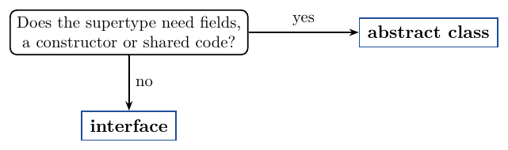
A design can use both. Shape is an abstract class that holds the shared name and implements Drawable. Label joins the same list of drawable items through Drawable alone.
Practice
8.1 For each case, write abstract class, interface, or both.
| Case | Choice |
|---|---|
Cat, Dog and Horse each have a name and an age, set by a constructor. | |
Song, Podcast and Alarm are unrelated, but each can be played. | |
Circle and Square are shapes with a name. Only some shapes, such as Square, can be resized. | |
Phone, Laptop and Scooter are unrelated, but each can be charged. |
8.2 How many classes can a class extend, and how many interfaces can it implement?
- One class and one interface.
- Any number of classes and one interface.
- One class and any number of interfaces.
- Any number of each.
8.3 Car and Bus both need a plate field set by a constructor, and some code that is the same for both. Which supertype fits?
- An abstract class, because an interface has no fields and no constructor.
- An interface, because an interface is usually the first choice.
- An interface with a default constructor.
- A functional interface.
8.4 A supertype needs no fields, no constructor and no shared code. Why is an interface the better choice than an abstract class?
9. Review
Practice
9.1 Write true or false for each statement.
| Statement | True or false? |
|---|---|
| An interface can have a constructor. | |
| A class can implement more than one interface. | |
| A default method has a body. | |
| A lambda can be written for any interface. | |
A Label can be added to an ArrayList<Drawable> because Label implements Drawable. |
9.2 Drawable has one abstract method, void draw(). What is true of this line?
Drawable d = () -> System.out.println("--------");- It compiles, and
d.draw()prints the dashes. - It is a compile error, because
Drawableis an interface. - It compiles, but
dcannot be added to anArrayList<Drawable>. - It creates a
Label.
9.3 The interface Chargeable has one method, void charge();. This class should implement it. It has two mistakes, and each one stops it from compiling. Find both and give a fix for each.
public class Phone extends Chargeable
{
private int battery;
public Phone()
{
battery = 0;
}
void charge()
{
battery = 100;
}
public int getBattery()
{
return battery;
}
}Now fix both mistakes in the box. The box includes Chargeable, charges the phone through a Chargeable variable and prints the battery.
10. Complete Java Programs
Write these two programs after class. Each reuses classes from Lecture 19's complete programs and adds an interface, so that an unrelated class can join the same list.
Program A: Invoice
Billableis an interface with one method,double cost().Vehicleis the abstract class from Lecture 19, which already hascost(). It now implementsBillable.Car(0.5 per km) andTruck(2.0 per km) are unchanged.Parking(String plate, int hours)implementsBillable. Its cost is 3.0 per hour, and itstoString()returns text such asParking CAR-7: 4 hours, cost 12.0.Invoicehas one private fieldArrayList<Billable> items.add(Billable item)adds an item,printAll()prints each item withprintln, andtotal()returns the total cost.InvoiceDemomakes the carCAR-7and the truckTRK-42with a maximum load of 900. The car drives 30 km and the truck 150 km. It adds the car, the truck and 4 hours of parking forCAR-7to an invoice, in that order, and prints them all and the total.
BillableThe box includes a Parking class that implements it, and prints the cost of 2 hours of parking.
VehicleThe starter is the Vehicle class of Lecture 19. Make it implement Billable. The box includes Billable and Car, and adds up the cost of a car through a Billable variable.
ParkingThe box includes Billable, and prints 4 hours of parking for CAR-7.
InvoiceThe box includes Billable and model Vehicle, Car, Truck and Parking classes, and runs InvoiceDemo.
The demo prints:
CAR-7: 30 km, cost 15.0 TRK-42: 150 km, cost 300.0 Parking CAR-7: 4 hours, cost 12.0 Total: 327.0
Program B: Order
Sellableis an interface with one abstract method,int price(), and a default methodpriceText()that returns the price followed bydollars, such as20 dollars.Ticketis the abstract class from Lecture 19. It now implementsSellable, so it no longer declares its own abstractprice(); it inherits that promise fromSellable. ItstoString()usespriceText().AdultTicket(20) andStudentTicket(15) are unchanged.Snack(String name, int price)implementsSellable. ItstoString()returns text such aspopcorn: 6 dollars.Orderhas one private fieldList<Sellable> items, created as anArrayList.add(Sellable item)adds an item,printAll()prints each item withprintln, andtotal()returns the total of the prices.OrderDemoadds an adult ticket for seat A3, a student ticket for seat B12 to student 2001234, and a popcorn snack for 6 dollars. Then it prints the items and the total.
SellableThe box includes a Snack class that implements it, and prints the price text of a snack.
TicketThe box includes Sellable and an AdultTicket class with a price of 20, and prints an adult ticket.
SnackThe box includes Sellable, and prints a popcorn snack for 6 dollars.
OrderThe box includes model Sellable, Ticket, AdultTicket, StudentTicket and Snack classes, and runs OrderDemo.
The demo prints:
A3: 20 dollars B12: 15 dollars, student 2001234 popcorn: 6 dollars Total: 41 dollars
Lecture summary
A class can extend only one class. An interface gives unrelated classes a shared type, so squares and labels can go in one list and be drawn by one loop.
Interfaces
- A class has exactly one superclass:
extends Text, Shapeis a compile error. - An interface lists method headers that a class promises to provide:
public interface Drawable { void draw(); }. Its methods are public and abstract without saying so. - No constructor, no instance fields (only constants such as
int MAX_ITEMS = 20;), and no objects:new Drawable()is a compile error.
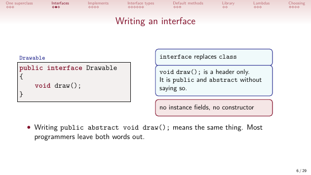
implements
- A class keeps the promise with
implements, writing every method of the interface aspublic. extendscomes first:public class Square extends Shape implements Drawable. A class can have one superclass and any number of interfaces.- An abstract class can implement an interface without writing its methods; its concrete subclasses must write them.
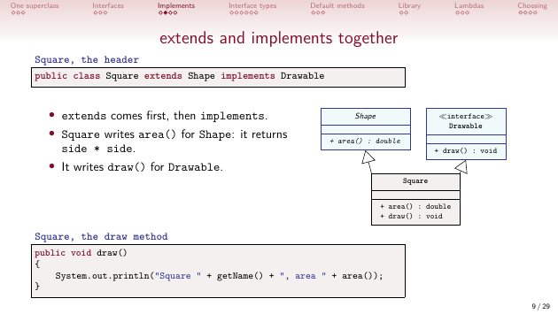
Interface types
- An interface is a type:
ArrayList<Drawable>holds squares and labels together, with noinstanceoftests and no casts. - The type of the variable decides which methods can be called; the class of the object decides which body runs.
- A method should ask for the smallest type it needs, such as
ArrayList<Resizable>.
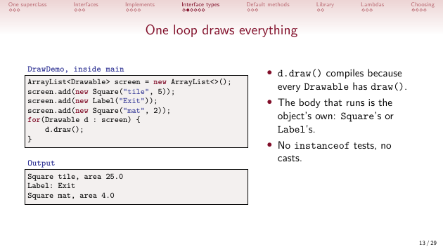
Default methods
- A default method has the word
defaultand a body. Every implementing class gets it, and can still write its own version. - Default methods let an interface grow without breaking the classes that already implement it.
- Two defaults with the same name: the class must write its own method, and can call
Drawable.super.info().
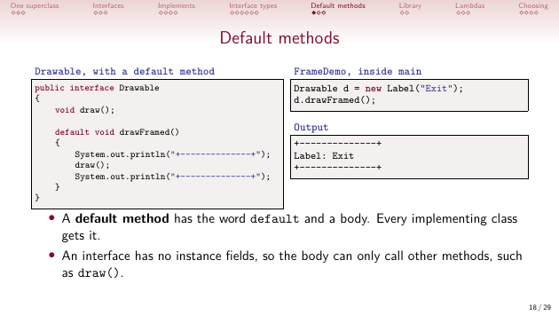
Library and lambdas
Listis an interface;ArrayListandLinkedListimplement it. WithList<String> names = new ArrayList<>();only thenewpart names the class.- A functional interface has exactly one abstract method, and a lambda can stand for it:
Drawable line = () -> System.out.println("--------"); removeIffrom Lecture 8 takes aPredicate, which is also a functional interface.
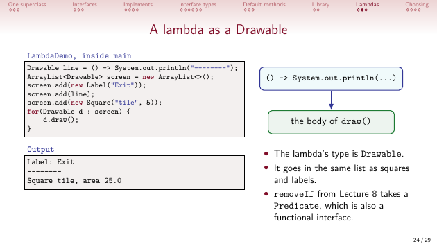
Choosing
- Use an abstract class when the supertype needs fields, a constructor or shared code.
- Otherwise an interface is usually the first choice, because a class can implement any number of them. A design can use both.
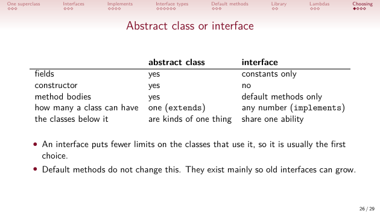
Programs
Billablelets vehicles and parking share one invoice, andSellable, with a defaultpriceText(), lets tickets and snacks share one order.